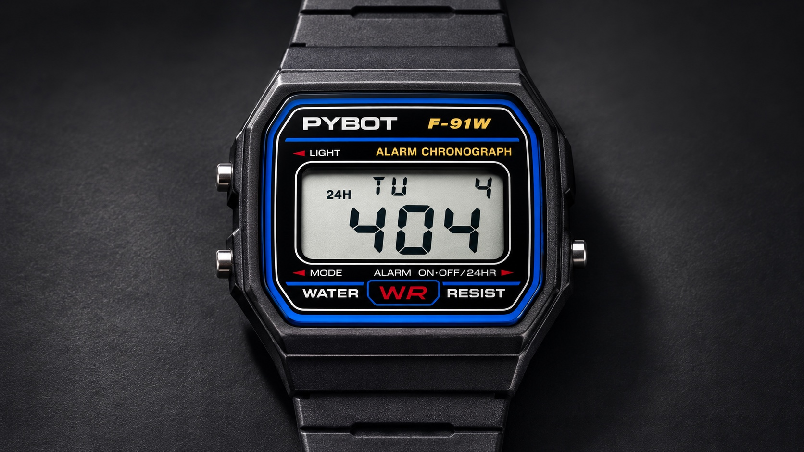

Why did my watch tell me to go to bed?

The question
How do I set the alarm on my F-91W watch?
PyBot suggested going to bed 30 minutes earlier. Do you think another module offered instructions for setting the watch?
Reveal the original replies
Change the question